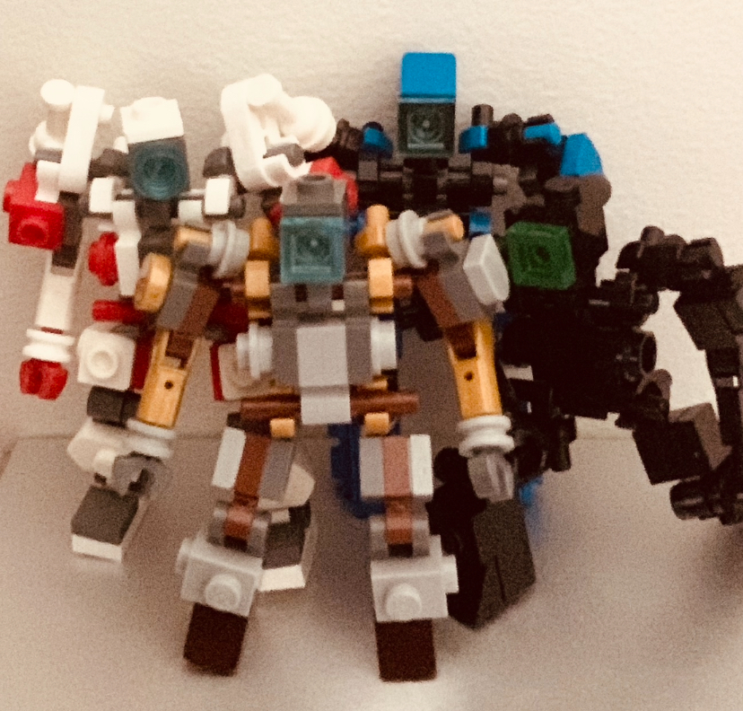
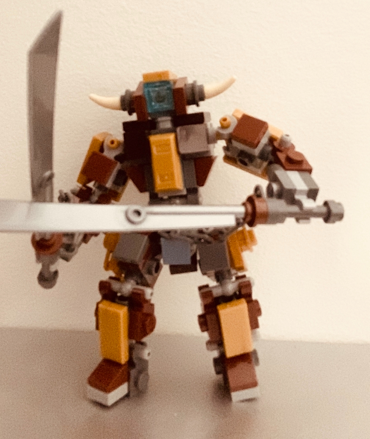
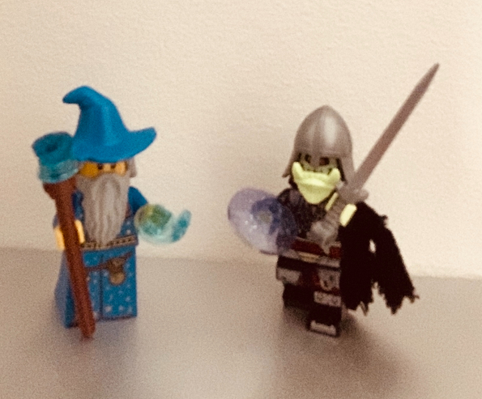
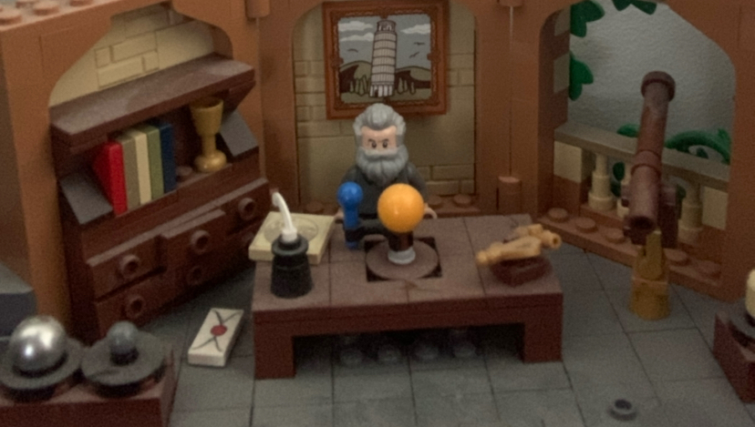

Place of origin
While watching Transformers, I was interested in what others could create with Lego transformers. My nephews David and Jesse love playing Lego, especially the Minecraft theme. I found the video you see above through the algorithm. I was motivated to create one of my own, along with other variants.
I'm now interested in another path with lego. Not just building lego, but building lego stop-motion.
Futures Gallery
In the future I'll plan on building small environmentt setting stations for my lego stop motion setup. Maybe a sci-fi cyber-punk battle zone. Or a Colosseum for a lego mage to battle monsters and the undead, that'll be when I get the money in 30 years.



